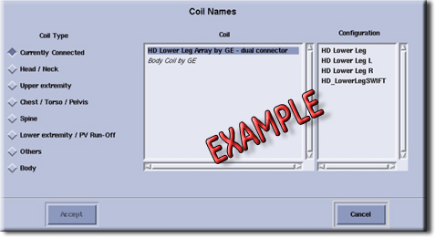
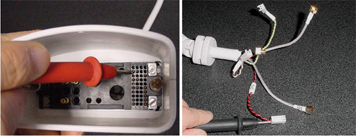

Operating Documentation
Direction 5440001-3, Rev# 6
Signa HDxt Service Methods
Module Version 2.0, Version Date 2/10/09
Operating Documentation |
| Required Persons | Procedure |
| 1 | 30 min |
The following tips can be used to troubleshoot common problems with the HDx 3.0T Shoulder Coil by GE A/B port.
Digital Voltmeter
Phantom (2359877)
Phantom Positioner (U1-150412)
The following coil configuration names must be installed to run the MCQA tool:
GE_HDx Shoulder
GE_HDx ShoulderServ
Problem:
If Unable to Pre-Scan or Scanning and Receiving No Signal
Possible Solution:
Verify that the green light above the port (A, B or C depends on which port is used to plug in the coil) is illuminated. This indicates the coil is properly plugged into the system.
Verify that the system has correctly detected the coil by checking in the Currently Connected in the GUI to select coils in Rx as shown in the example in Illustration 1.
Illustration 1: Currently Connected Coils on Scan Screen

Verify that the Landmark is correct and the cradle did not unlatch.
Perform a Continuity Check on the output cable (must be performed by a GE-authorized Service Engineer). See Step .
Verify that the coil is positioned with the cable exiting toward the bore.
Verify that the cable is not looped or crossed.
If still unable to obtain a signal, try to scan (transmit and receive) with the Body Coil. For this test, be sure to remove the Imaging Coil from the magnet bore before scanning with the body coil.
If still not receiving a signal, the problem probably lies with the MR system.
If the scan completes successfully, there may be a problem with the shoulder coil. Contact GE for further assistance.
If unable to scan with the substitute coil, there may be a system problem related to this particular coil type.
Problem:
Poor IQ, Shaded Images or MCQA Fails
Possible Solution:
Perform a Continuity Check on the output cable (must be performed by a GE-authorized Service Engineer). See Step .
Verify that there are no loops in the cables.
Verify that there are no metal or ferromagnetic objects in close proximity to the coil, patient or magnet (i.e., safety pin, hair pin).
Verify that the coil is properly positioned.
Verify that center frequency is within the frequency adjustment range for the system.
Verify that the R1, R2 and TG values from the pre-scan are within normally expected ranges.
If not already done, perform the coil Quality Assurance Test. (Refer to Operator Manual, 2417405.) If the obtained values do not fall within normal operating parameters, investigate by performing a Phantom Scan with the body coil. For this test, be sure to remove the Imaging Coil from the magnet bore before scanning with the body coil.
If still having the same problems, there is probably an MR system problem.
If the body coil scan is satisfactory, acquire a scan using another coil of the exact type (receive-only, phased array). If the image quality is visibly improved, there may be a problem with the shoulder coil.
If the image quality is still inadequate, there may be a system problem related to imaging with this type of coil. Contact GE for further assistance.
Problem:
Black Line or Signal Void on Image
Possible Solution:
Verify that there is no metal present in the area being scanned or on the patient.
Illustration 2 shows the pin layouts of the coil connector. The connector of the shoulder coil has two pins in column A, five pins in column J, three pins in column K, five pins in column M, and three RF coaxial connectors in C2, C4 and D2.
Illustration 2: Hypertronics Connector

Table 1: Pin and DC Connections for Column J
| Pin in Column J | 2 | 4 | 6 |
| DC Wire Color | Red | Blue | Brown |
| DC Bias of System | MC2 | MC4 | MC6 |
Table 2: Pin and DC Connections for Column K
| Pin in Column K | 2 | 4 | 6 |
| DC Wire Color | Black | Yellow | White |
| DC Bias Return of System | MC2 RTN | MC4 RTN | MC6 RTN |
If there are any broken, deformed or recessed pins or coaxial connectors, perform Cable Replacement.
| NOTE: | Under no circumstances should the continuity of the center pin of the coax connectors be measured. They may be extremely fragile if improper tools are used. |
Check for continuity of DC lines in the external cable.
Remove the cable assembly from coil. Refer to Cable Replacement.
There are three pins in Column J (J2, J4, J6) connecting to DC wires of the cable shown in Illustration 2 and Table 1.
Use a Digital Volt Meter (DVM) to check the resistance between the pin in Column J and the corresponding DC wire. (See Illustration 3.)
Illustration 3: Measure Resistance of DC Line

The resistance should be 21.0 ±2.0 ohms. If any resistance reading is not within this range, perform Cable Replacement.
There are three pins in column K (K2, K4, K6) connecting to DC wires of the cable shown in Illustration 2 and Table 2.
Use a DVM to check the resistance between the pin in column K and the corresponding DC wire. (See Illustration 4.)
Illustration 4: Measure Resistance of DC Return Line

The resistance should be 1.1 ±0.3 ohm. If the resistance reading is not within this range, perform Cable Replacement.
Check if any pin in J2, J4 and J6 is shorted to the ground. (Any pin in K2, K4 and K6 can be used as ground.) If any pin is shorted to ground, perform Cable Replacement.
Pin 3 in Row M is connected to three RF cables. The system supplies the preamp bias voltage through Pin M3 and RF cables to the coil. (See Illustration 2.)
Use a DVM to check resistance between Pin M3 and the central pin of the SMB Connector at the end of each RF cable. (See Illustration 5.)
Illustration 5: Measure Resistance of Preamp Bias Line

The resistance should be 7.5 ±1.0 ohm. If any resistance reading is not within this range, perform Cable Replacement.